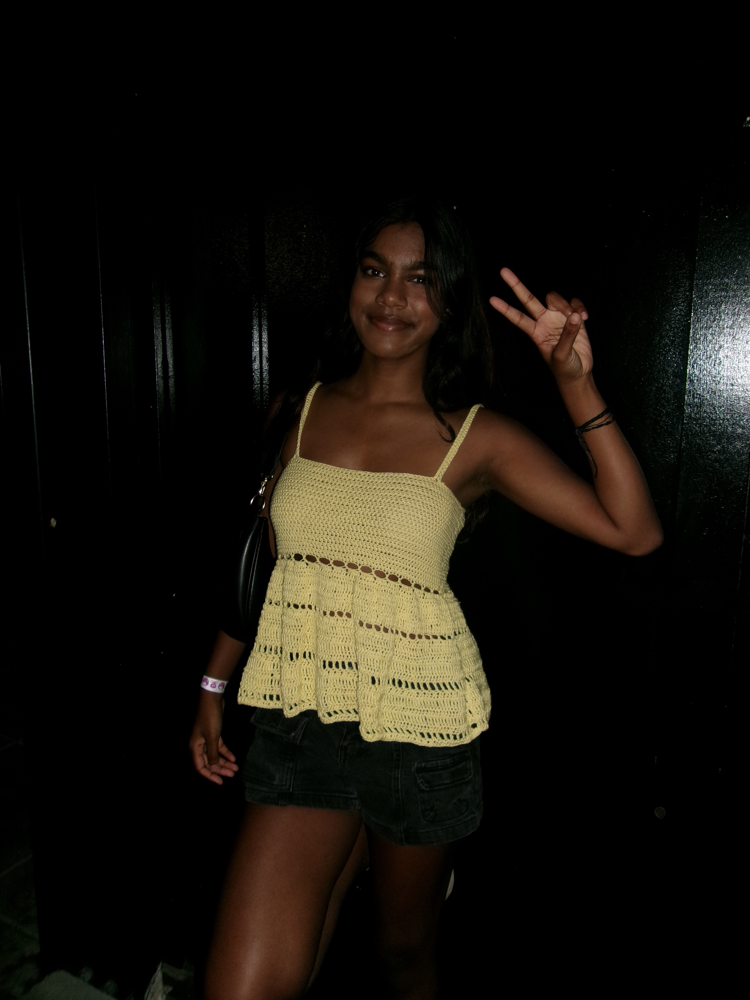
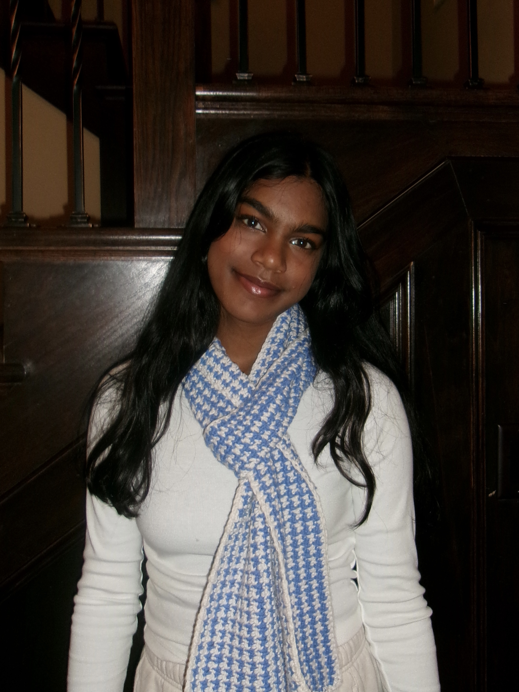
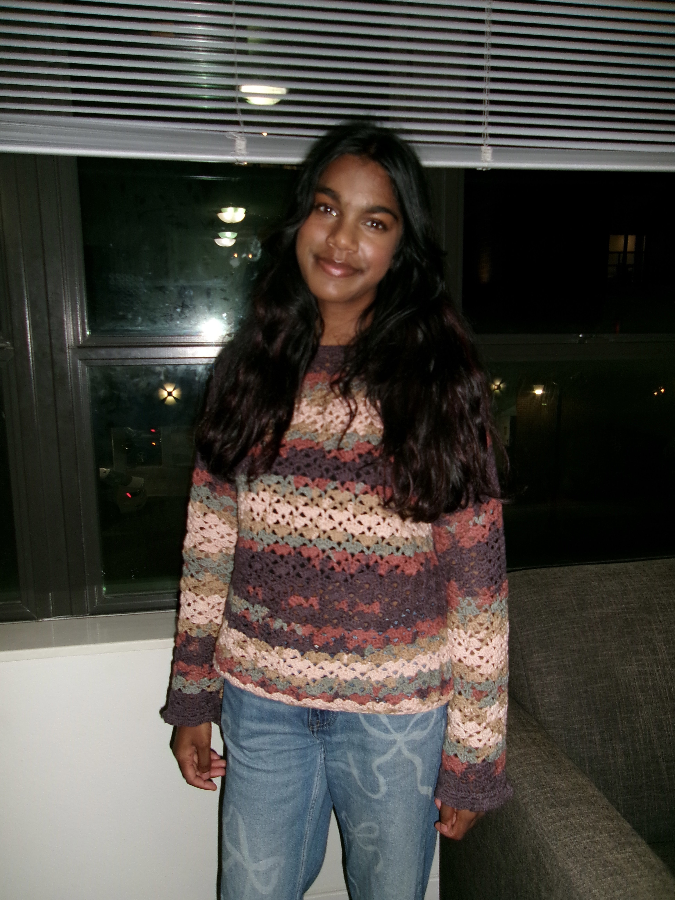
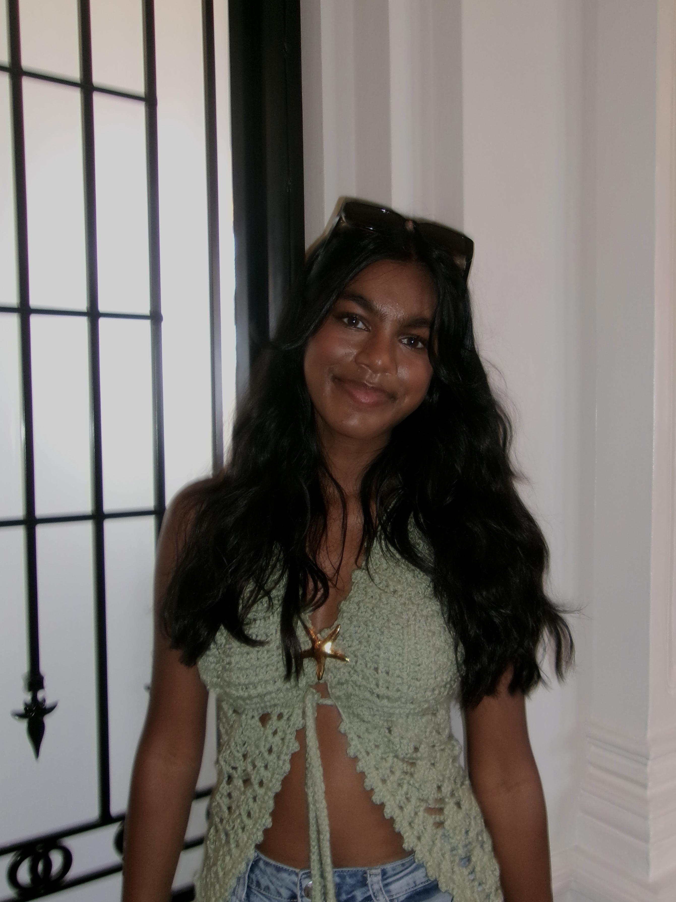
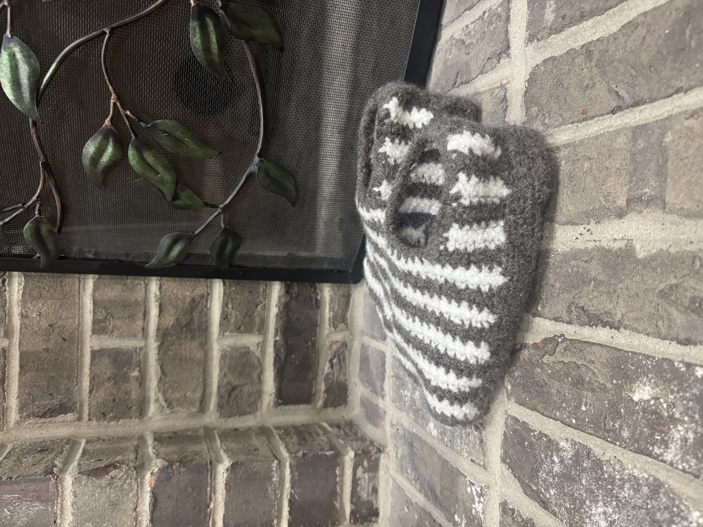
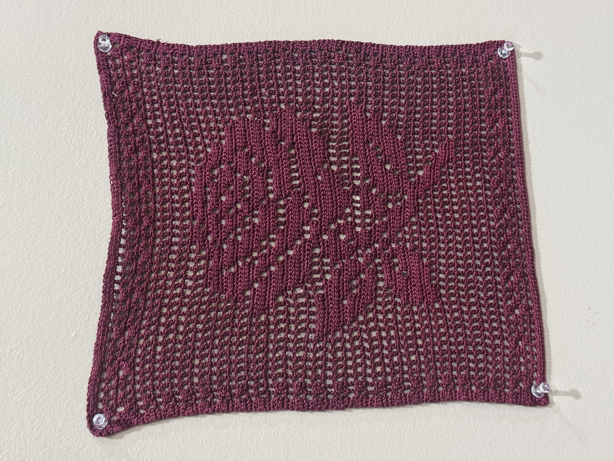
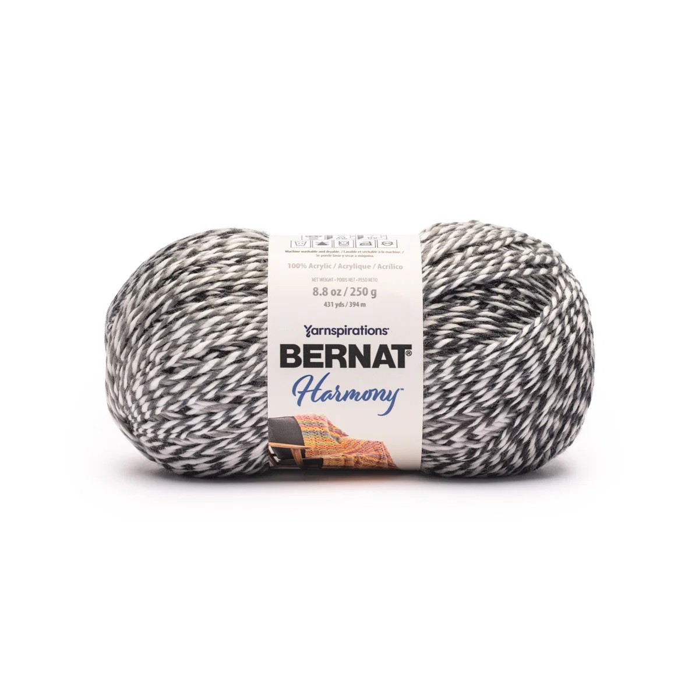
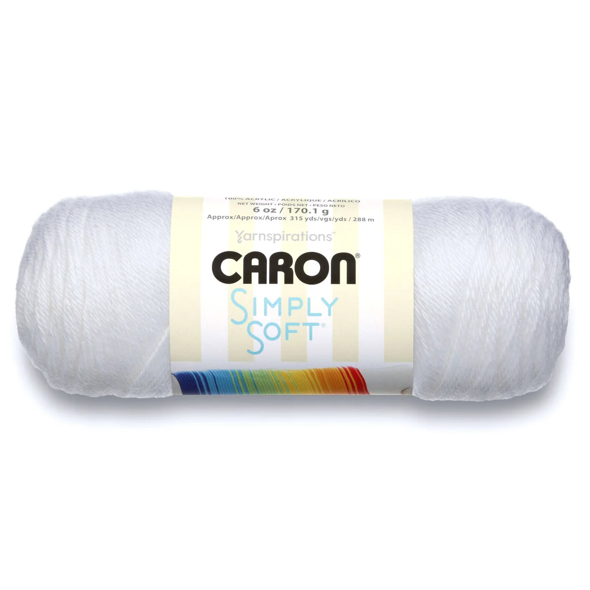
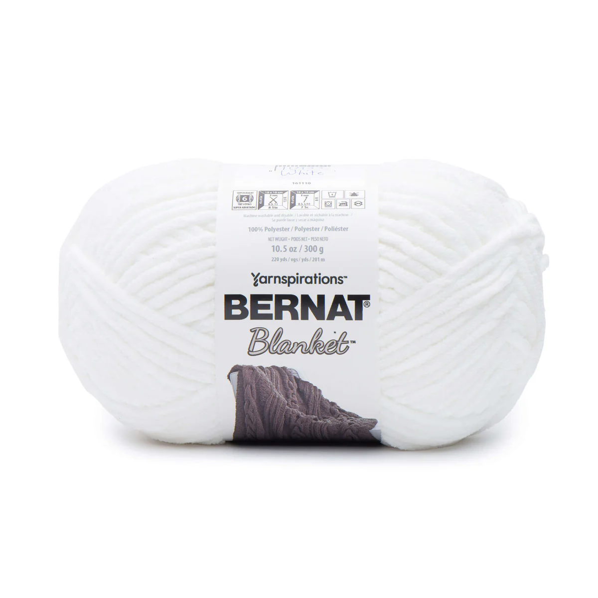

Sarayu Crochet
What I've been making.
From amigurumi to wearables.
Recent Projects






Yarn I’ve been loving

Bernat Harmony Yarn
Plush texture for blankets and cozy accessories
Smooth, soft, and easy to work with when you want a gentle drape and a polished finish.
Shop now
Caron Simply Soft Yarn
Everyday favorite for wearables and amigurumi
A versatile staple with a smooth finish that works well for soft garments, toys, and lightweight gift projects.
Shop now
Bernat Blanket Yarn
Bulky texture for quick blankets and plush layers
A fast-working favorite when you want a cuddly, oversized finish that feels extra cozy.
Shop nowAbout Me
I am a crochet enthusiast who loves turning yarn into pieces that are both practical and playful. I enjoy experimenting with new stitches, color palettes, and pattern adaptations.
Contact
Feel free to connect and follow my crochet updates using the links below.